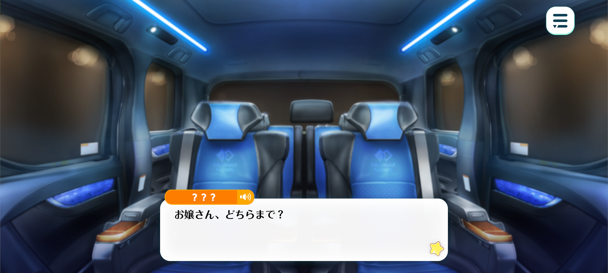
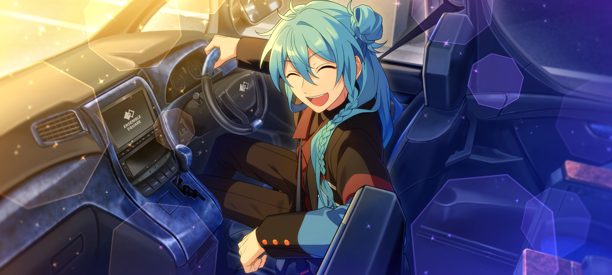
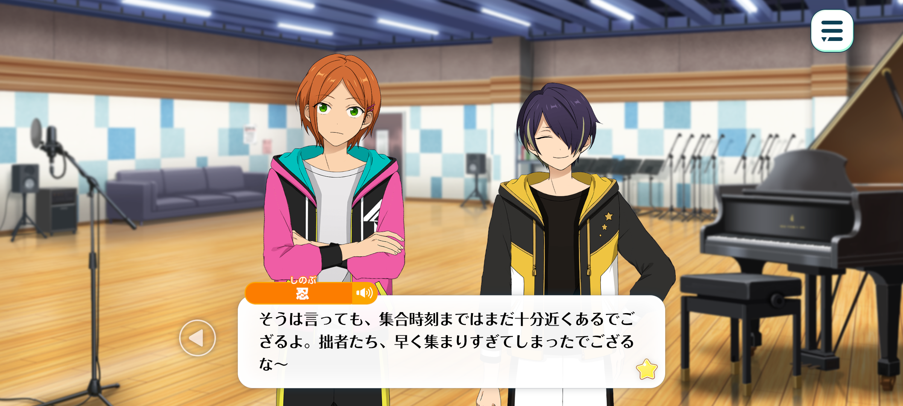
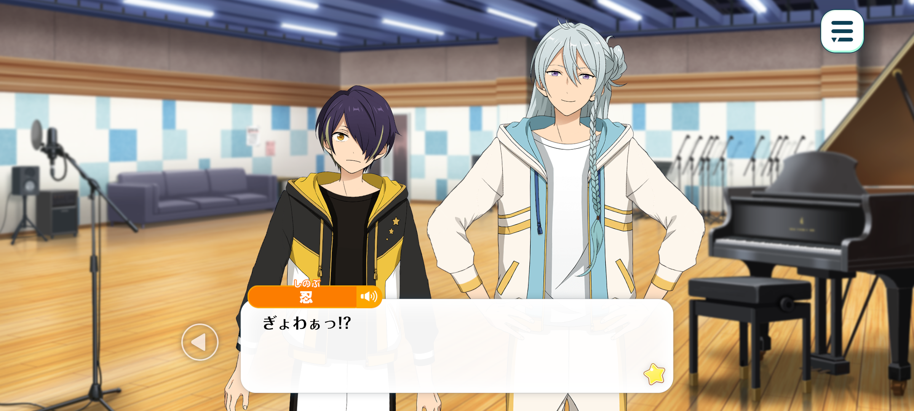
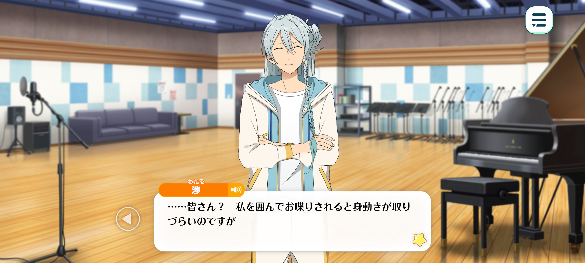

Easter To You
⌒Careful 3⌒



???: Where to, ma’am?
Wataru: The ES building? Most certainly......☆
Fufufu. You're wondering if there's something a little unusual about your driver, aren't you? Well, you'd be quite right!

Because the person who's come to pick you up tonight is none other than me! That's right, your very own Hibiki Wataru...☆
Aahahahaha! Oh, what a wonderful expression! Those lovely, wide eyes of yours, Anzu-san. I feel as though I might get lost in their sparkling surprise!
You're looking at me as if to ask what I want, aren't you? Perhaps you'll understand if I tell you it's something you're already quite familiar with, Anzu-san.
That's right. It's about the shuffle unit. I've already heard about it from quite a few people, you see...
I knew you were planning to get in touch with me as well, so I thought I'd take this opportunity to hear the details directly from you. And that's why I've come to pick you up like this...♪
Hmm, hmm. So the documents are nearly finished, and you were planning to send them over tonight...?
Have I ended up rushing you by coming here? I've already heard about the proposal itself from the others, so please, send me the documents whenever it's convenient for you.
After all, the reason I'm sitting here in the driver's seat is so that I can hear everything directly from you, Anzu-san.
I understand the circumstances surrounding Easter Fes, and how I came to be chosen for this shuffle unit... No, recommended for it.
After hearing what those children had to say at school, you decided to get in touch with me because...
...you thought I'd be a good fit for this shuffle unit. That's what you thought, too, isn't it, Anzu-san?
…I see. You believe that this group, myself included, can help achieve the goals of Easter Fes and fulfil the Student Council's requests...
So this is your judgement as a Producer, made with your expectations for us in mind.
You're wondering why I'm being so cautious? Am I being cautious, I wonder?
…
No, I have no reason to hesitate or turn down the offer. Being personally invited by my juniors is a rare opportunity, after all.
An entertainer's job is to meet everyone's expectations—and then surpass them! I shall fulfil my role, just you watch...☆
Well then! It's my duty to make sure you get safely to the ES Building, Anzu-san.
Have you fastened your seatbelt? Then let our little night-time drive begin...☆
Time: A couple of days later

Hinata: Hibiki-senpai's late...
Shinobu: That said, there's still a little while before the meeting starts. Perhaps we just got here too early~
Hiiro: Umu. I was so excited to finally meet everyone as a unit that I ended up arriving a little too early.
Mika: I've already been here fer thirty minutes. Guess we're all pretty excited t’get started.
Hinata: Yup! Let's all do our best for Easter Fes…
...Oh? Someone's knocking! Could that be Hibiki-senpai?
Hiiro: I'll go and welcome him. Wataru-senpai, welcome—
Huh?
Shinobu: Is something the matter?
Hiiro: It's not Wataru-senpai. It's a dove. So that knocking sound was actually coming from this little bird?
Mika: Ah, I shoulda known. It's Hibiki-senpai's dove. I've had one set on me before, so I recognised it.
Shinobu: If there's a dove here, does that mean Hibiki-dono must be nearby...?

Wataru: Indeed! Just look behind you...♪
Shinobu: Gyahhh!?
Wataru: Fufufu, what a delightful reaction! Such lovely shrieks—they're music to my ears...☆
Hinata: Huhhh!? Hibiki-senpai's already in the room!? Since when...?!
Hiiro: Oh, and Anzu-san has arrived too. Is everyone here now?
Hinata: Yup! Now that we're all together, Easter Fes is really starting to feel exciting! ♪
Shinobu: Nihihi! I'm looking forward to this! I wonder what we can accomplish as a group of five?
Mika: It'll be pretty interestin' ta try somethin' different from our usual unit activities.
Hiiro: I'd like to take this opportunity to get to know Wataru-senpai and everyone else better. I'm looking forward to working with you all!

Wataru: ...Everyone? It's becoming rather difficult for me to move when you're all gathered around me chatting like this.
Hinata: I'm really glad you could join us, Hibiki-senpai! ♪ Now then, how about a few words of encouragement from our senpai?
Shinobu + Mika: …(Looking up at Wataru with a hopeful expression)
Wataru: …I see.
Together with all of you, I'd love to celebrate the arrival of spring and bring a little more colour to the season. I look forward to working with you all as a unit...♪
Hinata: Alright! I started saying something earlier, but I never got to finish. Now that everyone's here, let me say it properly...
Hey, Anzu-san's part of this group too! It's okay to have a group huddle even if the live is still a long way off, right?
Let's do our best for Easter Fes~! Whoooop...! ☆